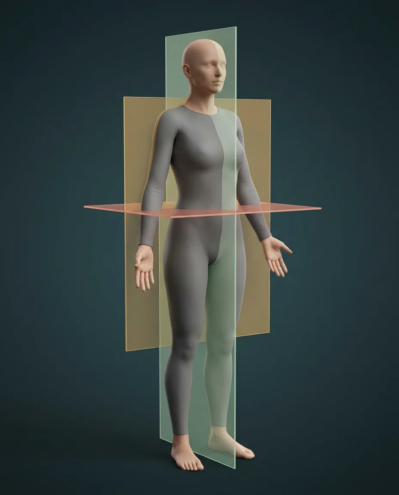

How this part of the body works
Anatomical terminology begins with the subject in anatomical position: upright, facing forward and palms anterior. Relative terms refer to the subject, not the observer. Median sagittal, coronal and transverse reference planes divide the body left-right, front-back and superior-inferior; parasagittal and oblique sections serve other views. Movements are defined about joints and their axes, with limb-specific terms including pronation, dorsiflexion and inversion. The translucent planes on this digitally rendered body are conceptual, not physical membranes. Imaging orientations must be confirmed for each modality.
Terminology and study entries
These 24 reference concepts are explained without pretending they are visible features on a body photograph.
Standard anatomical position
Upright, face forward, upper limbs at sides with palms anterior and thumbs lateral; feet directed forward. Directions use the subject’s body, not the viewer’s.
What it doesProvides a consistent reference for locations and movements.
Clinical connectionProne or supine patients retain anatomical left and right.
Patient right and left
Right and left always refer to the subject; on an anterior image, patient right usually appears on the viewer’s left.
What it doesPrevents reversal when describing a structure or reading a map.
Clinical connectionCheck image-view conventions before labeling a side on a scan.
Median sagittal plane
Vertical plane through the midline dividing the body into equal right and left halves. The translucent sheet is a conceptual aid.
What it doesDefines exact midline relationships.
Clinical connectionDo not confuse sagittal with a front-versus-back coronal section.
Parasagittal plane
Any sagittal plane parallel to but displaced from the midline, yielding unequal left and right portions.
What it doesLocates off-center section views.
Clinical connectionAn off-center sagittal CT or MRI is not a median image.
Frontal (coronal) plane
Vertical plane dividing anterior and posterior portions; shown by a translucent sheet, not a real tissue boundary.
What it doesOrganizes front-to-back relationships.
Clinical connectionCoronal scans can show both kidneys and the spine on one slice.
Transverse (axial) plane
Plane perpendicular to the long axis of an upright body, dividing superior and inferior portions.
What it doesExplains cross-sections and many CT/MRI slices.
Clinical connectionImage display orientation must be checked rather than guessed.
Oblique plane
A section angled relative to standard sagittal, coronal and transverse planes.
What it doesFollows a structure that does not lie in a cardinal plane.
Clinical connectionOblique imaging can change apparent shape and size.
Anterior and posterior
Anterior points toward the front of the body; posterior toward the back, in anatomical position.
What it doesDescribes depth along the front-to-back axis.
Clinical connectionThe sternum is anterior to the heart; the spine is posterior to it.
Superior and inferior
Superior indicates nearer the head; inferior nearer the feet when the body is in standard anatomical position.
What it doesOrders structures along the long axis of the body.
Clinical connectionThe diaphragm lies inferior to the lungs.
Medial and lateral
Medial is closer to the median plane; lateral is farther toward a side.
What it doesCompares transverse location without depending on the viewer.
Clinical connectionThe thumb is lateral in anatomical position.
Proximal and distal
Proximal is nearer a limb’s attachment to the trunk; distal farther away along the limb.
What it doesDescribes relative position along a limb.
Clinical connectionThe elbow is proximal to the wrist.
Superficial and deep
Superficial is closer to the external body surface; deep is farther within.
What it doesSeparates skin, muscle, bone and deeper organs.
Clinical connectionDeep does not mean the structure is always visible in an illustration.
Ipsilateral and contralateral
Ipsilateral structures lie on the same side; contralateral structures lie on opposite sides of the body.
What it doesDescribes side-to-side clinical relationships.
Clinical connectionA left brain motor pathway usually controls contralateral limb muscles.
Flexion and extension
Flexion generally decreases the angle between articulating segments; extension generally increases it. Direction can differ by joint.
What it doesDescribes common sagittal-plane motions at limb joints.
Clinical connectionAt the knee, flexion bends the leg posteriorly; use joint-specific terminology.
Abduction and adduction
Abduction moves away from the body’s median plane; adduction moves toward it, with hand and foot digits referenced to their own axes.
What it doesDescribes movement in the frontal plane at many joints.
Clinical connectionFinger abduction uses the middle finger as its reference axis.
Medial and lateral rotation
A limb rotates about its long axis toward or away from the body midline; joint position and axis must be specified.
What it doesDescribes shoulder and hip rotations.
Clinical connectionDo not equate axial rotation with limb abduction.
Circumduction
Combined sequence of flexion, abduction, extension and adduction that traces a cone with the distal segment.
What it doesIntegrates movement around a multiaxial joint.
Clinical connectionIt is a combination of motions, not a separately spinning bone.
Pronation and supination
Forearm pronation rotates the radius across the ulna to turn the palm posteriorly in anatomical position; supination restores the palm anteriorly.
What it doesOrientates the hand while radius and ulna move at radioulnar joints.
Clinical connectionElbow flexion changes apparent palm orientation in space, not the definition.
Dorsiflexion and plantarflexion
Dorsiflexion brings the dorsum of the foot toward the leg; plantarflexion points the foot downward.
What it doesDescribes ankle motion during gait.
Clinical connectionThese terms apply at the ankle, not to inversion at the subtalar complex.
Inversion and eversion
Inversion turns the sole toward the midline; eversion turns it outward, across the hindfoot and midfoot joints.
What it doesDescribes sole orientation on uneven ground.
Clinical connectionDo not confuse inversion with internal rotation at the hip.
Thumb opposition
Thumb moves across the palm so its pad approaches a finger pad; reposition is the return movement.
What it doesEnables precision pinch and grasp.
Clinical connectionMedian-nerve injury can impair thumb opposition.
Surface anatomical landmarks
Externally palpable landmarks such as the clavicle, sternum and iliac crest orient deeper structures.
What it doesConnects real surface examination with three-dimensional anatomy.
Clinical connectionA visible skin mark is not proof of a deep organ’s exact boundary.
Section versus projection
A cross-sectional image depicts a slice; a radiographic projection superimposes structures along the X-ray beam.
What it doesPrevents confusing slice depth with an overlaid projection.
Clinical connectionNever map an unseen internal structure to an arbitrary pixel on this plane model.
Normal anatomical variation
People differ in organ, vessel, muscle and nerve branching; the schematic reference stance is not a patient-specific map.
What it doesEncourages cautious interpretation of generic teaching illustrations.
Clinical connectionAtypical anatomy needs appropriate clinical assessment when relevant.
Five questions about Anatomical language · planes & movement
Short answers grounded in the structures described above. Use the illustrated guide for anatomical context.
What is the standard anatomical position?
The subject stands upright facing forward, with arms at the sides and palms facing anteriorly; thumbs point laterally. Right and left always belong to the subject, even when a patient is lying down.
How do sagittal, coronal and transverse planes differ?
A sagittal plane separates right from left, a coronal plane separates anterior from posterior, and a transverse plane separates superior from inferior. The median sagittal plane passes through the midline.
What is the difference between proximal and distal?
Proximal means closer to the point where a limb joins the trunk; distal means farther from that attachment. The elbow is proximal to the wrist in the upper limb.
Why does patient right appear on the left side of a front-facing illustration?
An anterior image faces the patient. Their right side is therefore on the observer’s left. Anatomical descriptions use the patient’s own side, not the screen’s left or right.
Are the colored planes in this atlas real body membranes?
No. The translucent sheets are computer-generated reference planes used to explain sections. They are not physical tissues, and the chapter does not place false anatomical pins on them.
Related anatomy guides
Follow these connected structures and body systems in the illustrated atlas.
 Body cavities · regions & quadrantsTrace dorsal and ventral cavities, serous spaces and patient-oriented abdominal quadrants and regions.↗
Body cavities · regions & quadrantsTrace dorsal and ventral cavities, serous spaces and patient-oriented abdominal quadrants and regions.↗ Cells & four basic tissuesExplore cell structure and the four tissue families with dedicated microscopic-scale teaching illustrations.↗
Cells & four basic tissuesExplore cell structure and the four tissue families with dedicated microscopic-scale teaching illustrations.↗ SkeletonThe frame: leverage for muscle, armour for viscera, a calcium bank, and the marrow factory that makes every blood cell.↗
SkeletonThe frame: leverage for muscle, armour for viscera, a calcium bank, and the marrow factory that makes every blood cell.↗ Joints & ligamentsWhere bones meet: cartilage cushions, capsules contain, ligaments guide — the knee is the classic teaching joint because every principle is visible in it.↗
Joints & ligamentsWhere bones meet: cartilage cushions, capsules contain, ligaments guide — the knee is the classic teaching joint because every principle is visible in it.↗Further reading
General anatomy references and related source chapters for continued study. These links do not make the digital illustrations clinical images or certify every anatomical variant.
This educational page is not medical advice and has not undergone formal clinical peer review. Spotted an error? Contact the editor.
Open the realistic interactive plate, label lines, focus view and self-test.